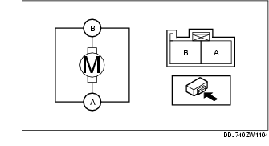

Blower motor inspection 1. Connect battery positive voltage to terminal B and ground to terminal A of the blower motor and verify its operation. • If there is any malfunction, replace the blower motor. 